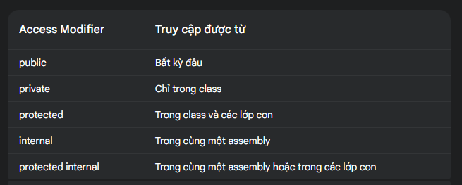
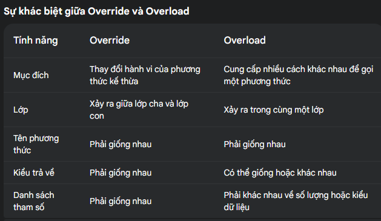
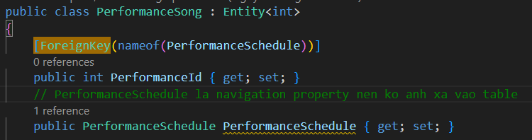
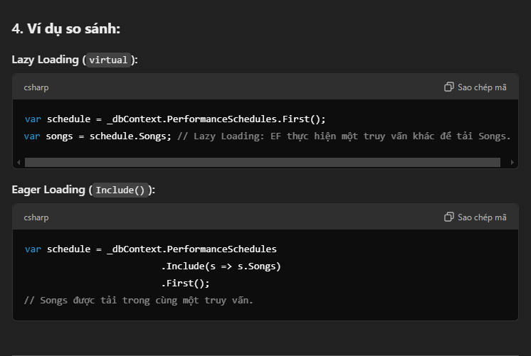
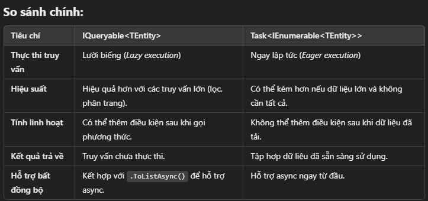
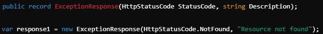
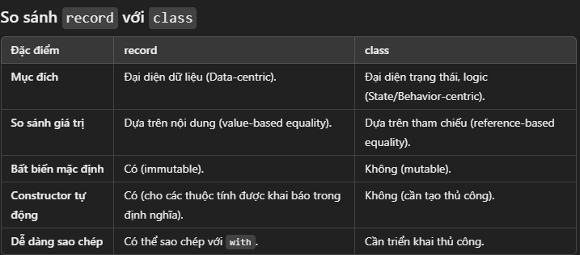
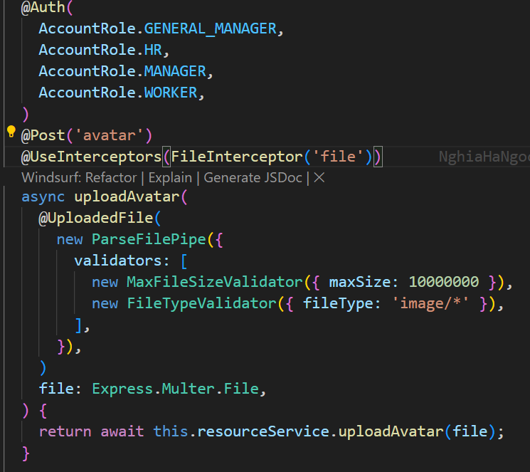
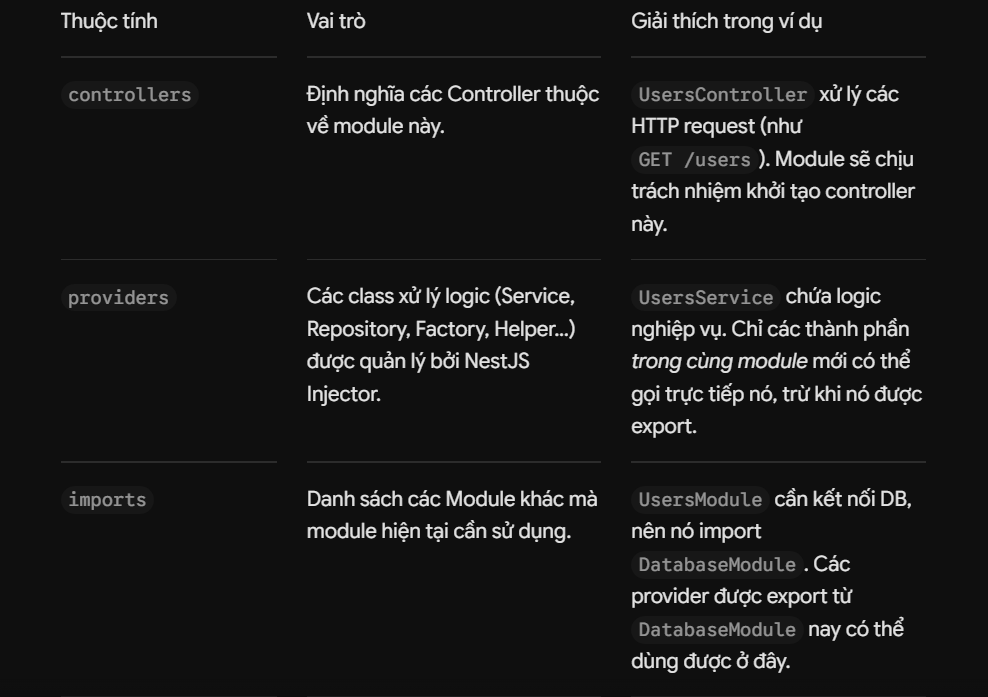
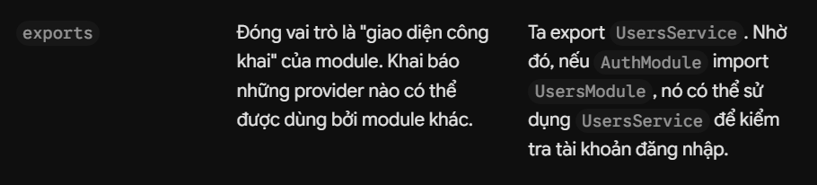

Backend — .NET & NestJS
Nền tảng OOP, stack vs heap, ADO.NET và Entity Framework phía .NET; decorator, guard, module, upload file phía NestJS; cùng nhóm câu hỏi về API, REST và GraphQL.
4 tính chất OOP
Tính đóng gói (Encapsulation): dùng để bảo vệ các thành phần bên trong của Object (thường gọi là private). Các thành phần bên ngoài sẽ không được can thiệp và sử dụng các thành phần này trực tiếp mà phải thông qua các phương thức công khai (public get set).

- Tính kế thừa (Inheritance): một cơ chế xây dựng class mới dựa trên các class đã có. Các class kế thừa sẽ bao gồm toàn bộ các attributes và methods từ base class (lớp cơ sở) hay parent class (lớp cha).
- Tính đa hình (Polymorphism): các đối tượng khác nhau thực thi chức năng giống nhau theo những cách khác nhau.
Polymorphism trong OOP được chia làm 2 loại: Static Polymorphism (đa hình tĩnh - Overloading) và Dynamic Polymorphism (đa hình động - Overriding)

Bắt buộc ghi đè (overriding):
Nếu Drive thuộc một giao diện hoặc là một phương thức trừu tượng trong lớp trừu tượng.
interface IVehicle { void Drive(); }
abstract class Vehicle { public abstract void Drive(); }Không bắt buộc ghi đè:
Nếu Drive là một phương thức không trừu tượng (cụ thể) trong lớp cha.
class Vehicle { public virtual void Drive() { Console.WriteLine("Vehicle is driving."); } }Tính trừu tượng (Abstraction): quá trình bỏ qua những property, method ko cần thiết và chỉ use những property, method cần thiết của đối tượng
====================================================================So sánh Interface và Abstract Class
Cả 2 đều dùng để định nghĩa 1 "khuôn mẫu" bắt buộc các lớp con phải tuân theo, nhưng khác nhau ở việc có chứa code thực thi sẵn hay không, và số lượng có thể áp dụng cùng lúc cho 1 class.
| Interface | Abstract Class | |
|---|---|---|
| Chứa code thực thi | Không — chỉ khai báo chữ ký method, không có phần thân (thuần "hợp đồng") | Có thể — vừa có method đã viết sẵn code dùng chung, vừa có method trừu tượng (abstract) bắt buộc lớp con tự viết |
| Số lượng implement/kế thừa | 1 class có thể implement nhiều interface cùng lúc | 1 class chỉ extends được đúng 1 abstract class (kế thừa đơn) |
| Field/thuộc tính | Không chứa field có giá trị khởi tạo (chỉ có thể khai báo hằng số) | Có thể chứa field, constructor, thuộc tính đã khởi tạo giá trị |
| Mục đích chính | Thống nhất chữ ký giữa các class hoàn toàn khác nhau về logic (dễ swap qua dependency injection) | Chia sẻ code chung giữa các class có quan hệ họ hàng thật sự |
Ví dụ Interface — nhiều cổng thanh toán khác nhau, chỉ cần thống nhất chữ ký
public interface IPaymentGateway
{
Task<PaymentResult> ChargeAsync(decimal amount);
}
public class StripeGateway : IPaymentGateway
{
public Task<PaymentResult> ChargeAsync(decimal amount) { /* gọi API Stripe */ }
}
public class MomoGateway : IPaymentGateway
{
public Task<PaymentResult> ChargeAsync(decimal amount) { /* gọi API Momo */ }
}
// StripeGateway và MomoGateway hoàn toàn khác nhau về cách thực thi,
// chỉ cần cùng implement IPaymentGateway để service gọi được qua DI mà không cần biết đang dùng cổng nàoVí dụ Abstract Class — nhiều repository dùng chung logic retry
public abstract class BaseRepository<T>
{
// Method đã có sẵn code dùng chung cho MỌI repository con
protected async Task<T> ExecuteWithRetryAsync(Func<Task<T>> query, int maxRetry = 3)
{
for (int i = 0; i < maxRetry; i++)
{
try { return await query(); }
catch (DbException) when (i < maxRetry - 1) { }
}
throw new Exception("Retry hết lượt vẫn thất bại");
}
// Method trừu tượng — bắt buộc lớp con tự viết câu query cụ thể
public abstract Task<T> GetByIdAsync(int id);
}
public class UserRepository : BaseRepository<User>
{
public override Task<User> GetByIdAsync(int id)
=> ExecuteWithRetryAsync(() => _db.Users.FindAsync(id));
}
// UserRepository không cần viết lại logic retry — thừa hưởng sẵn từ BaseRepository,
// chỉ cần tự viết phần khác nhau: câu query GetByIdAsync"Interface là hợp đồng thuần tuý, chỉ định nghĩa các method phải có mà không chứa code thực thi, và 1 class có thể implement nhiều interface cùng lúc. Abstract class thì vừa có thể chứa method đã có sẵn code dùng chung, vừa có method trừu tượng bắt buộc lớp con phải tự viết, nhưng chỉ hỗ trợ kế thừa đơn — 1 class chỉ extends được 1 abstract class. Em chọn interface khi các class implement hoàn toàn khác nhau về logic, chỉ cần thống nhất chữ ký để dễ swap qua dependency injection — ví dụ nhiều cổng thanh toán khác nhau. Em chọn abstract class khi các class có quan hệ họ hàng thật sự và cần chia sẻ code chung, ví dụ nhiều loại repository đều cần logic retry giống nhau, chỉ khác câu query cụ thể."
Stack với Heap
Các chương trình khi hoạt động cần sử dụng bộ nhớ trên RAM. Trước tiên ta hãy nhớ về khái niệm cấp phát (allocate) và thu hồi (deallocate) vùng nhớ
- Chương trình không thể tự tiện truy xuất vùng nhớ mà phải "xin phép" hệ điều hành, khi đó chương trình "sở hữu" vùng nhớ này và hệ điều hành đảm bảo sẽ không có 1 chương trình nào khác can thiệp vào, quá trình này gọi là cấp phát vùng nhớ
(memory allocation) - Sau khi sử dụng xong vùng nhớ đã cấp phát, chương trình cần "trả" nó lại cho hệ điều hành (để chương trình khác có thể sử dụng), quá trình này gọi là thu hồi vùng nhớ
(memory deallocation)
Stack memory: Quá trình cấp phát và thu hồi trong Stack sẽ hoạt động theo kiểu LIFO, nghĩa là dữ liệu nào được cấp phát trước sẽ bị thu hồi sau
Heap memory: Dữ liệu được cấp phát sẽ không có thứ tự xác định, để truy cập dữ liệu trong Heap cần phải thông qua địa chỉ (khi cấp phát xong thì hệ điều hành sẽ trả về địa chỉ này)
====================================================================ADO.NET
là tập hợp các thư viện lớp qua đó cho phép ứng dụng tương tác (get, create,update, delete) với các nguồn dữ liệu (Như SQLServer, XML, MySQL, Oracle Database ...).
https://bb.ccc.dddd.maya.vn/ado-net-gioi-thieu-ado-net-va-ket-noi-sql-server-voi-sqlconnection.html
https://viblo.asia/p/phan-1-tong-quan-ve-entity-framework-core-4dbZNQNaKYM
====================================================================
ORM vs ODMAn ORM maps between an Object Model and a Relational Database. An ODM maps between an Object Model and a Document Database.
====================================================================
Navigation property:Trong Entity Framework (EF), thuộc tính điều hướng (navigation property) là thuộc tính được sử dụng để mô tả mối quan hệ giữa các thực thể (entities). Nó không ánh xạ trực tiếp thành cột trong cơ sở dữ liệu mà được EF dùng để tạo liên kết logic giữa các bảng.
vd:

====================================================================Chức năng của AddControllers
- Đăng ký Controller: Phương thức này thêm tất cả các controller của ứng dụng vào DI container. Controller có thể là:
- Controller của Web API (thường kế thừa từ ControllerBase).
- Không bao gồm các tính năng liên quan đến Razor Pages hoặc Views (dùng trong MVC).
- Cấu hình JSON Serializer: Mặc định, nó sử dụng System.Text.Json làm trình xử lý JSON. Bạn có thể thay đổi hoặc cấu hình chi tiết hơn nếu cần.
- Kích hoạt các tính năng cần thiết cho Web API: Cụ thể, các middleware và dịch vụ được thêm vào bao gồm:
- Routing
- Model Binding
- Validation
- Formatters (JSON, XML, etc.)
- Action Filters
Phương thức
Mô tả
AddControllers()Chỉ đăng ký controller cho Web API, không bao gồm Views hoặc Razor Pages.
AddControllersWithViews()Đăng ký controller cho cả Web API và MVC, hỗ trợ Razor Views nhưng không hỗ trợ Razor Pages.
AddMvc()Đăng ký đầy đủ MVC, bao gồm cả Razor Pages, Views và Controllers cho Web API.
====================================================================AddDbContext
code:
services.AddDbContext<DatabaseContext>(option =>
{
option.UseSqlServer(Configuration.GetConnectionString("DefaultConnection"));
});
services.AddDbContext<DatabaseContext>(...): Đăng ký DatabaseContext vào DI container. DatabaseContext là lớp kế thừa từ DbContext, đại diện cho cơ sở dữ liệu trong ứng dụng.options.UseSqlServer(...): Cấu hình sử dụng SQL Server là nhà cung cấp cơ sở dữ liệu. Bạn có thể thay đổi thành các nhà cung cấp khác như PostgreSQL, SQLite, v.v. tuỳ thuộc vào cơ sở dữ liệu mà bạn sử dụng.
Configuration.GetConnectionString("DefaultConnection"): Lấy chuỗi kết nối đến cơ sở dữ liệu từ file cấu hình ứng dụng (thường là appsettings.json hoặc appsettings.Development.json). DefaultConnection là tên chuỗi kết nối được cấu hình trong phần này.Lazy Loading và Eager Loading

===========================================================
===========================================================
Record
Đặc điểm chính của record
- Tính bất biến (Immutable):
- Các thuộc tính của
recordmặc định chỉ cóget, nghĩa là không thể thay đổi sau khi khởi tạo (nếu không dùnginithoặcsetrõ ràng). - So sánh giá trị (Value-based Equality):
- Hai đối tượng
recordđược coi là bằng nhau nếu tất cả các giá trị thuộc tính của chúng bằng nhau, không phụ thuộc vào tham chiếu trong bộ nhớ. - Tự động sinh constructor:
recordtự động sinh ra constructor với các tham số tương ứng với các thuộc tính.- Dành cho mô hình dữ liệu (Data Models):
- Thường được dùng cho các đối tượng dữ liệu, DTOs (Data Transfer Objects), kết quả API, v.v.

JWT
https://200lab.io/blog/jwt-la-gi?srsltid=AfmBOop5EboB46epFVuXgqSDilr9PZnvtQdd0li_N5fRO_lD1o_UcZ2Y
``````````````````````````````````````````` ………………``````````````````````````````````````````
// FE
multipart/form-data là gì
multipart/form-data là 1 kiểu Content-Type dùng để gửi dữ liệu form có kèm file, chia request thành nhiều phần ngăn cách bởi boundary, cho phép trộn text và binary trong cùng 1 request. Trong JavaScript, mình tạo dữ liệu này bằng FormData object, và khi gửi đi trình duyệt tự set đúng Content-Type multipart/form-data kèm boundary
Dùng khi 1 request cần gửi kèm file (ảnh, video, audio, Excel, PDF...) — dù chỉ gửi mỗi 1 file, hay gửi file kèm thêm các field text khác (như tên, mô tả, category đi cùng ảnh upload). Đây gần như là lựa chọn duy nhất cho việc upload file qua form HTTP truyền thống. Trước kia dùng content-type là application/json không gửi được binary trực tiếp (phải encode base64, làm phình kích thước lên ~33% và tốn CPU encode/decode không cần thiết). Giờ đây multipart/form-data cho phép gửi binary trực tiếp.
Ví dụ thực tế cần multipart/form-data:
- - Upload avatar (file ảnh + có thể kèm caption)
- - Import Excel (file + có thể kèm option "ghi đè hay không")
- - Đăng bài kèm nhiều ảnh (text nội dung + nhiều file ảnh)
- - Upload audio ghi âm cuộc gọi (file audio)
Express.Multer.File
là kiểu dữ liệu (interface) mà NestJS dùng để mô tả một file đã được upload thông qua middleware Multer (mặc định của NestJS để xử lý multipart/form-data).

Decorator
- là một hàm đặc biệt được dùng để thêm hành vi (metadata hoặc logic) vào class, property, method, accessor hoặc parameter, mà không thay đổi mã gốc của đối tượng đó. Decorator thường dùng trong các framework như Angular, NestJS, hoặc để xây dựng hệ thống DI (Dependency Injection).
- decorator đc call trong quá trình biên dịch file lần đầu , chứ ko phải trong quá trình 1 class đc khởi tạo hay 1 property đc truy cập …
Guard
- là một thành phần dùng để kiểm soát quyền truy cập đến các route (API endpoint). Nó được sử dụng để xác định xem một request có được phép thực hiện hay không – thường dùng cho xác thực (authentication) và phân quyền (authorization).
- là class implement CanActivate interface.Chạy trước khi route handler được thực thi. Nếu trả về true → request được tiếp tục. Nếu trả về false → bị chặn, trả về 403 hoặc lỗi tùy bạn xử lý.
API
một "cầu nối" cho phép các ứng dụng phần mềm khác nhau giao tiếp và trao đổi dữ liệu với nhau một cách có quy tắc.
Restful API
- là một tiêu chuẩn dùng trong việc thiết kế các API cho các ứng dụng web để quản lý các resource.
- REST hoạt động chủ yếu dựa vào giao thức HTTP => tuân theo mô hình Client-Server
- Nó sử dụng các phương thức HTTP như GET, POST, PUT, DELETE để thực hiện các thao tác (CRUD - Tạo, Đọc, Cập nhật, Xóa) trên các tài nguyên
- Format dữ liệu trả về là JSON or XML
- Gồm nhiều endpoint , mỗi endpoint tương ứng vs mỗi resource
- Có hỗ trợ API version (v1,v2…)
- Có caching sẵn do dùng HTTP
- Ngoài Restful còn có các chuẩn API khác như SOAP, GraphQL, rGPC, …
GraphQL
- là một ngôn ngữ truy vấn API cho phép client truy vấn chính xác những dữ liệu mà client cần
- chỉ có duy nhất 1 endpoint vì tổ chức theo types và fields
- Format dữ liệu trả về là JSON
- Gồm các thành phần: Schema, Query, Mutation
- Ko hỗ trợ API version
- Ko có caching sẵn , phải tự tích hợp bên ngoài
Module
Trong NestJS, Module là một class được đánh dấu bằng decorator @Module().
Mỗi ứng dụng NestJS đều có ít nhất một module gọi là Root Module (thường là AppModule). Root module này là điểm bắt đầu để NestJS xây dựng biểu đồ ứng dụng (application graph)
Decorator @Module bao gồm:


- providers có service A và B , thì controller có thể inject service A,B để sài và A cx có thể inject B để sài B trong A đc luôn nhé
- Controller có thể gọi cả A và B: Bất kỳ controller nào trong module đó đều có thể inject A và B thông qua
constructor. - Provider có thể gọi lẫn nhau: Service A hoàn toàn có thể inject Service B (hoặc ngược lại) để sử dụng các hàm của B bên trong A.
Global Module (Module Toàn cầu)
- là một module đặc biệt trong NestJS được đánh dấu bằng decorator
@Global(). - Hiểu đơn giản: Ở điều kiện bình thường, nếu
UsersModulemuốn dùngDatabaseServicetừDatabaseModule, bạn phải đưaDatabaseModulevào mảngimportscủaUsersModule. Nhưng nếuDatabaseModulelà một Global Module, bạn không cần phảiimportnó ở bất cứ đâu nữa – mọi module khác trong ứng dụng đều có thể tự do dùng các service mà nó xuất ra.
Request lifecycle trong NestJS
Middleware: Chạy đầu tiên. Nhiệm vụ chính là
+ chặn các request spam (rate limit)
+ điều hướng req đến router handler (controller) tương ứng
Guards: Rào chắn bảo mật (Authentication/Authorization). Nếu người dùng không có quyền, Guard trả về false, request bị chặn ngay lập tức (lỗi 401/403).
Interceptors (Pre-controller): ghi log request
Pipes:
+ Validate (kiểm tra tính hợp lệ của DTO)
+ Transform (ép kiểu dữ liệu đầu vào, ví dụ từ string sang số nguyên). Nếu validate trượt, ném lỗi 400 Bad Request.
Controller (Route Handler):
+ Điểm tiếp nhận request đã được "làm sạch" và gọi service phù hợp.
+ Bên cạnh đó có thể add job vào queue rồi response về 202 accepted khi dùng background job
Service: Xử lý nghiệp vụ lõi (business logic), tính toán, và tương tác với Database thông qua repository.
Interceptors (Post-request):
+ Hứng kết quả do Service/Controller trả ra để format về response chung cho client (ví dụ: bọc tất cả trong format chuẩn { statusCode: 200, data: ... }) trước khi gửi đi.
+ Ghi log tổng thời gian xử lý request này để log warn nếu vượt ngưỡng thời gian quy định
Exception Filters: Nếu có bất kỳ lỗi (Exception) nào văng ra từ các layer trên, Filter sẽ gom lại, format về 1 response lỗi chung cho client và trả về HTTP status code phù hợp.